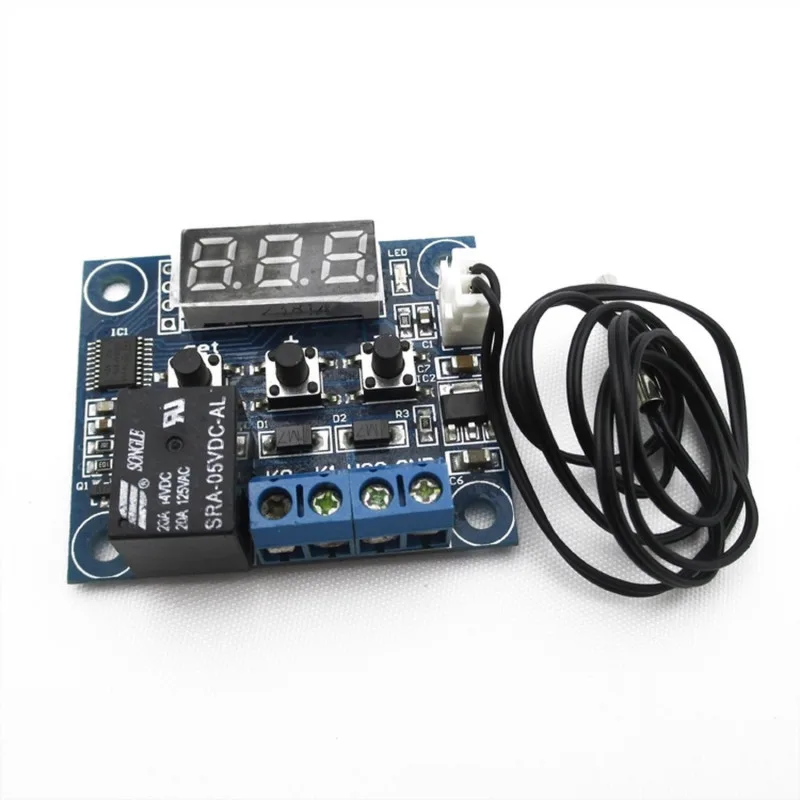

Incubación · Tienda Granja Rentable
Termostato digital W1209 con sonda sumergible

Precio estimado según tu país
Plazo estimado en la lista de países.
- España: 14,95 € · plazo estimado 2 días. Envío desde almacén en España, sin gastos de importación. Compra desde Canarias: IGIC al 7 % incluido.
El W1209 es el termostato que monta media comunidad de incubadoras caseras: sonda sumergible, pantalla digital y un relé que enciende y apaga la resistencia o la bombilla para mantener la temperatura que le marques, entre −50 y 110 °C. Funciona a 12 V, así que es seguro para experimentar, y cuesta tan poco que conviene tener uno de repuesto. También vale para criadoras, terrarios y fermentadores. Lo vende SATKIT, tienda española de electrónica, con envío desde España en unos 2 días.
Qué incluye
- 1 termostato W1209 con pantalla
- Sonda de temperatura sumergible
Para qué puede servir
- Incubadoras caseras de poliestireno o nevera reciclada
- Control de la lámpara de calor de la criadora
- Repuesto económico para incubadoras con el termostato averiado
Cómo se usa
- Aliméntalo a 12 V y conecta la carga al relé según el esquema de la placa
- Programa la temperatura objetivo y la histéresis (0,5 °C va bien para incubar)
- Deja la sonda a la altura de los huevos, sin tocar la resistencia
Quién te vende
Te vende Juan Pablo González García (NIF 78701119H), titular de Granja Rentable. The Honey Trading es un nombre comercial del mismo titular. [PENDIENTE: confirmar si The Honey Trading aparece en el cobro de todos los productos de la tienda o solo en la incubadora]
Precio, plazo e impuestos
El país de esta ficha sale de la IP. Con ese país se muestran el precio, el plazo y los impuestos confirmados. El titular está en Canarias: en una compra desde Canarias el precio lleva el IGIC al 7 % incluido. No es el IVA. Para el resto de España, la UE y los demás países, [PENDIENTE gestor: impuestos del precio en el resto de España, la UE y otros países]. Fuera de Canarias pueden existir tasas o gestión aduanera no incluidas.
El producto se envía directamente desde el proveedor. El importador puede variar según el producto y el país. Se informa en esta ficha o al registrar el pedido. Contacto del titular: dahanitrading@gmail.com.
Desistimiento, devolución y garantía
Tienes 14 días naturales desde que recibes el producto para comunicar el desistimiento, sin dar motivo. El reembolso, incluidos los gastos de entrega ordinaria, se hace como máximo en 14 días desde esa comunicación. Podemos retener el reembolso hasta recibir el bien o una prueba de que lo has enviado. El coste de la devolución lo asumes tú; te lo decimos antes de que envíes el paquete.
La devolución se envía a la dirección del almacén del proveedor. Esa dirección te la facilitamos cuando nos comunicas el desistimiento, escribiendo a ventas@granjarentable.com. Quien responde ante ti del reembolso y de la garantía legal de conformidad es Granja Rentable, no el proveedor. [PENDIENTE: plazos de garantía legal por país]